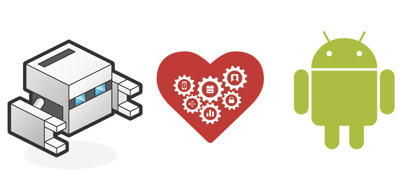

PhoneGap

PhoneGap es un framework para el desarrollo de aplicaciones móviles producido por Nitobi, y comprado posteriormente por Adobe Systems.3 4 Principalmente, PhoneGap permite a los programadores desarrollar aplicaciones para dispositivos móviles utilizando herramientas genéricas tales como JavaScript, HTML5 y CSS3. Las aplicaciones resultantes son híbridas, es decir que no son realmente aplicaciones nativas al dispositivo (ya que el renderizado se realiza mediante vistas web y no con interfaces gráficas específicas de cada sistema), pero no se tratan tampoco de aplicaciones web (teniendo en cuenta que son aplicaciones que son empaquetadas para poder ser desplegadas en el dispositivo incluso trabajando con el API del sistema nativo).

PhoneGap es un paquete de librerías que permite empaquetar aplicaciones HTML5 de manera que puedan ser usadas como apps para móviles o Web Apps.
PhoneGap es una solución de Adobe que nos permite llevar el desarrollo para la web al mundo de los dispositivos. Se basa en una “envoltura” que nos permite ejecutar aplicaciones desarrolladas con HTML, CSS y Javascript como si fueran aplicaciones nativas para los teléfonos móviles o tablets.

Facilidad. Si conocemos lenguajes Web (especialmente JavaScript), desarrollar una aplicación con PhoneGap nos resultará mucho más fácil que hacerlo a través de los SDK asociados a cada plataforma.
Velocidad de desarrollo. Con PhoneGap, codificamos la aplicación una sola vez y la adaptamos a múltiples plataformas, en vez de escribir una aplicación diferente para cada una.
Aplicación nativa. Nuestra aplicación tendrá todas las ventajas de las aplicaciones nativas.
Libre y gratuito. PhoneGap es open source y se puede utilizar sin costo para una primera aplicación.
Extensible. Existen muchos plugins para extender las funcionalidades de PhoneGap y acceder a características adicionales del dispositivo.